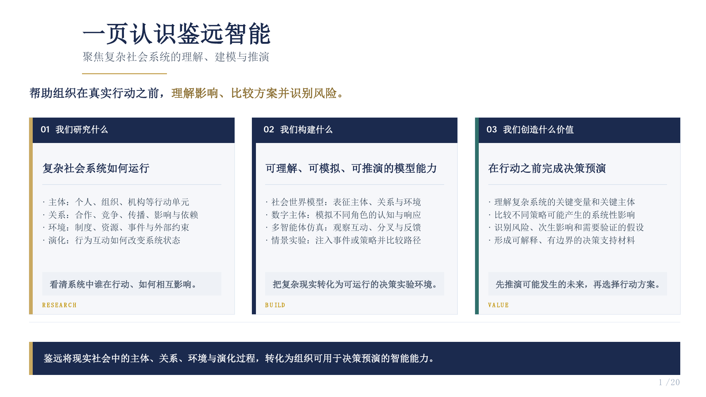

How complex social systems operate
- Actors, organizations, and institutions
- Relationships, diffusion, influence, and dependence
- Rules, resources, events, and external constraints
- System change through interaction
曾历任央企及科技上市公司研究院院长、数据银行事业部总经理、首席科学家等职务。将学术问题放入真实数据、复杂组织和现实决策环境中检验，并把实践中暴露出的新问题带回基础研究。 He previously served as a research institute dean, general manager of a data banking business unit, and chief scientist across central state-owned and publicly listed technology enterprises. This experience connects research with real data, complex organizations, and decision settings.
鉴远智能 Jianyuan Intelligence
鉴远智能是社会世界模型研究的产业转化与工程验证载体，围绕多智能体社会模拟、社会数据、复杂信息传播与现实决策实验开展技术研发。
在个人研究体系中，学院课题组承担开放的基础研究、人才培养和可复现学术产出；公司承担产品工程、场景验证和真实反馈。双方在知识产权、数据合规、学生参与和成果发表上保持清晰边界。
Jianyuan Intelligence serves as a research translation and engineering validation vehicle for social world models, multi-agent social simulation, social data, information diffusion, and real-world decision experiments.
The academic group focuses on open fundamental research, education, and reproducible scholarship. The company focuses on product engineering and real-world validation, with explicit boundaries around intellectual property, data compliance, student participation, and publication.
技术转化路径 Translation pathway
从复杂社会问题出发，经由数据、智能体和模拟系统形成实验能力，再在现实任务中获得反馈，持续改进模型和研究问题。 Complex social questions are translated into data, agents, and simulation systems, then tested in real tasks to refine both models and research questions.

Jianyuan Intelligence
Focused on understanding, modeling, and reasoning about complex social systems.
代表性课题 Selected projects
长期参与数据要素市场、可信数据空间、高质量数据集与公共数据运营相关研究，为社会 AI Data 和计算治理奠定现实基础。 Long-term work on data markets, trusted data spaces, high-quality datasets, and public data operations provides a real-world foundation for social AI data and computational governance.
数据交易场所功能、运行与治理研究；核心负责人、子课题三负责人。 Research on the functions, operation, and governance of data trading venues; core lead and subproject lead.
数字赋能精准就业与社会保障服务研究；子课题负责人。 Digital enablement for targeted employment and social security services; subproject lead.
全球数据基础制度比较研究；子课题负责人。 Comparative research on global foundational data institutions; subproject lead.
中央企业数据权利、授权、保护、资产化与市场化研究；核心负责人。 Data rights, authorization, protection, assetization, and market mechanisms for central state-owned enterprises; core lead.
湖北省高质量数据集相关研究；项目负责人。 Research on high-quality datasets in Hubei Province; project lead.
面向数据银行平台的数据交易关键技术研究；项目负责人。 Key technologies for data transactions on data bank platforms; project lead.
经历 Trajectory
不同阶段围绕同一类问题展开：如何把复杂系统转化为可测量、可计算、可验证的对象。 Across stages, the recurring question is how to make complex systems measurable, computable, and testable.
博士生导师，开展社会世界模型与计算社会系统研究。 Faculty; social world models and computational social systems.
副总经理、首席数据科学家，推动数据与智能技术研究及应用。 Deputy general manager and chief data scientist, leading data and AI research translation.
研究院院长、事业部总经理，负责数据银行、数据资产与交易机制相关研究和产业实践。 Institute dean and business unit general manager, working on data banks, data assets, and transaction mechanisms.
博士后，研究数据银行、数据资产估值、定价与交易。 Postdoctoral research on data banks, data asset valuation, pricing, and trading.
工学博士，研究飞秒级同步与时间稳定性。 Ph.D. in Engineering, focusing on femtosecond timing and synchronization.
兼修法学硕士，研究政治经济学与国有企业改革。 Concurrent Master of Law training in political economy and state-owned enterprise reform.
工学学士。 Bachelor of Engineering.
荣誉 Recognition
以下表述强调已公开荣誉，不对尚未公开确认的个人排序作延伸表述。 The wording below describes public recognitions without extending claims about unconfirmed individual rankings.
获2023年度国家科学技术进步奖二等奖（2024年公布）。 Received a Second Prize of the 2023 State Science and Technology Progress Award, announced in 2024.
获2023年度北京市科学技术进步奖二等奖。 Received a Second Prize of the 2023 Beijing Science and Technology Progress Award.
获2025年度中国技术产业化促进会科学技术奖一等奖。 Received a First Prize from the China Association for Promotion of Science and Technology Industrialization in 2025.
清华大学院系优秀博士学位论文。 Outstanding doctoral dissertation recognition at Tsinghua University department level.
课题组欢迎希望连接理论、数据、工程系统与社会问题的同学。 The group welcomes students who want to connect theory, data, engineered systems, and social problems.